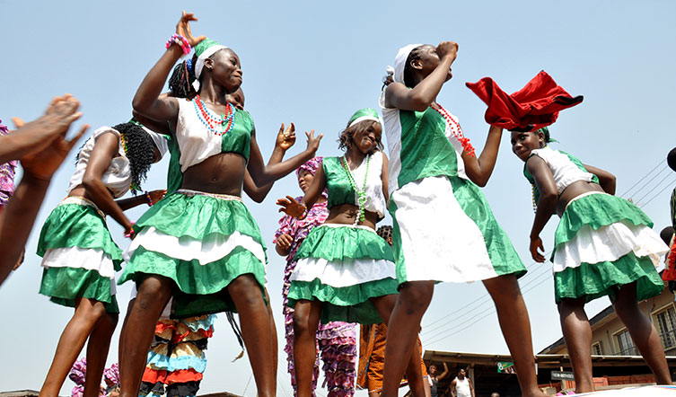

welcome
We arouse the world to the awe-inspiring and rich cultural heritage of the Edos, the tremendous agility of its people, the creative output of their endeavours, the wealth of its landmarks, the uniqueness of its art, music, folklore and the magnificence of the Oba and the Benin kingdom.
It’s a celebration of good luck, good tidings, long life and prosperity. A time to offer prayers for the coming year and to enjoy the good tidings of the immediate past.
This is a display of the colourful life and culture of the great people of the Benin Kingdom as never seen. This is the Ugie Carnival.

A time of
drums,
& drums





A time of
merriment & fun


An experience
of rare
occassions & historical
activities